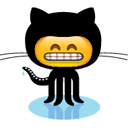

Github emoji auto-complete for Chrome
Install from Chrome Web Store
View on GitHub sym3tri/octo-moji

Just type colon : to bring up the auto-complete menu.
:
Created by me (@sym3tri). More about me at www.edrooth.com
Having trouble? Check out the documentation or submit an issue.